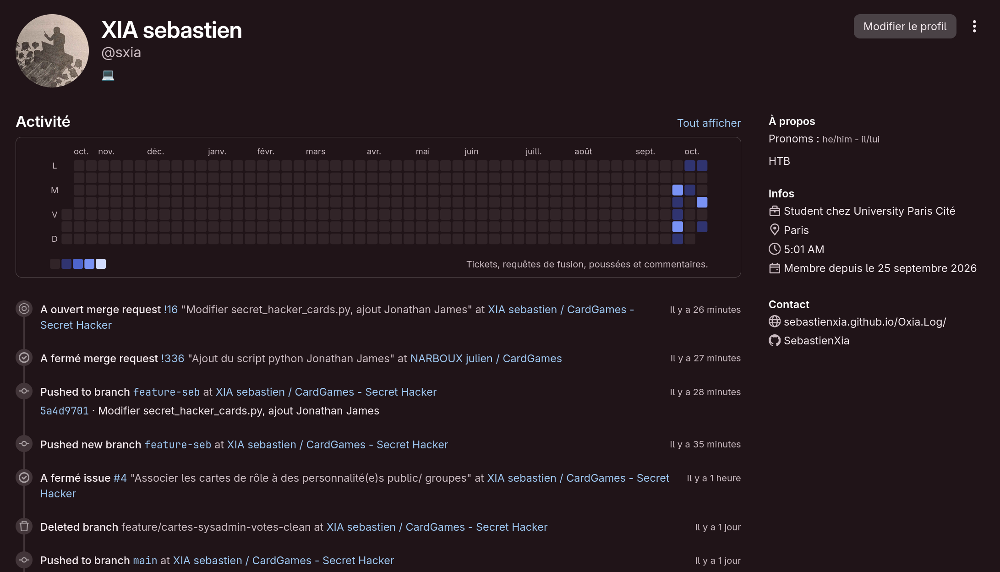
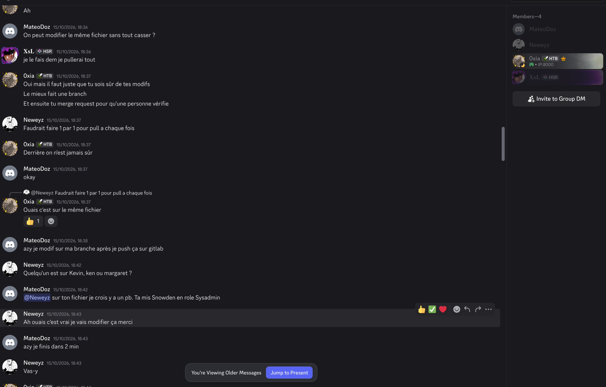

Rapport Mini Projet Conduite de Projet 2026
Jeu : Secret Hacker
Informations Personnelles
Nom : XIA
Prénom : Sébastien
Numéro étudiant (Confidentiel) : « Voir dans le fichier avec le lien vers le rapport »

1. Contribution sous forme de cartes
Thème : personnalités et groupes réels du monde du hacking, associés aux rôles du jeu.
- Proposition de l'idée d'associer les cartes à des personnalités publiques / groupes de hackers : voir ticket #4 – voir commit
- Ajout de la carte du hacker Adrian Lamo : voir commit
- Ajout de la carte du hacker Jonathan James : voir commit
- Ajout du fichier du dos des cartes et des cartes de vote « Oui » / « Non » : voir commit
- Mise à jour du fichier de génération des cartes
secret_hacker_cards.py: voir commit - Correction d'un oubli dans le code : voir commit
Ces contributions ont été poussées directement sur la branche main, sans merge request (voir le retour réflexif).
2. Contribution sous forme de relecture ou modification des suggestions des autres
En tant que mainteneur du dépôt, j'ai relu et validé les merge requests de mes coéquipiers :
- Ajout des illustrations des personnages historiques : voir MR !2
- Ajout de la carte de vote oui/non : voir MR !10
- Ajout des cartes SysAdmin/Votes, anonymisation du verso et création du dossier d'illustrations des votes : voir MR !12
- Ajout propre des rôles, votes et illustrations d'actions : voir MR !15
Voir l'activité et les commentaires du projet
3. Contributions aux tâches collectives du projet
- Création et maintenance du dépôt GitLab : ajout des membres de l'équipe, relecture et fusion des merge requests (voir section 2).
- Soumission au Main du Professeur : en tant que mainteneur du fork, j'ai proposé le travail de l'équipe au projet principal du professeur :
- Règles du jeu et règles de contribution : rédaction des règles du jeu et d'une section « Comment contribuer » dans le README (voir ticket #2 – voir commit).
- Organisation des tâches : création de labels pour classer les tickets (voir labels).
- Licence : ajout de la licence MIT au projet (voir commit).
- Communication : création avec l'équipe d'un groupe Discord pour coordonner le travail. J'y ai proposé que chacun travaille sur sa propre branche puis passe par une merge request relue par un autre membre, afin d'éviter les conflits sur les fichiers partagés.

4. Retour réflexif sur cette expérience
Cette expérience m'a permis de mieux comprendre le fonctionnement d'un projet de développement collaboratif. J'avais déjà des connaissances sur Git et GitHub, mais travailler à quatre sur un même dépôt m'a fait comprendre Git plus en profondeur, notamment la gestion des branches, des merge requests et des conflits.
Au début du projet, je poussais mes modifications directement sur la branche main. Cela fonctionnait tant que j'étais seul à travailler sur un fichier, mais lorsque plusieurs membres ont commencé à modifier les mêmes fichiers, le risque de conflits et d'écrasement du travail des autres est devenu évident. J'ai alors proposé à l'équipe de travailler chacun sur sa branche, puis de passer par une merge request vérifiée par une autre personne avant fusion.
La relecture a montré son utilité : un coéquipier a par exemple repéré qu'une carte avait été associée au mauvais rôle (Snowden placé en SysAdmin), ce qui a été corrigé avant d'être intégré.
Si c'était à refaire, je mettrais en place ce fonctionnement dès le début : un ticket pour chaque tâche, une branche par ticket, une merge request qui ferme le ticket, et une protection de la branche main pour imposer la relecture. J'ai aussi retenu l'importance de messages de commit clairs, certains de mes premiers commits n'étant pas assez explicites.